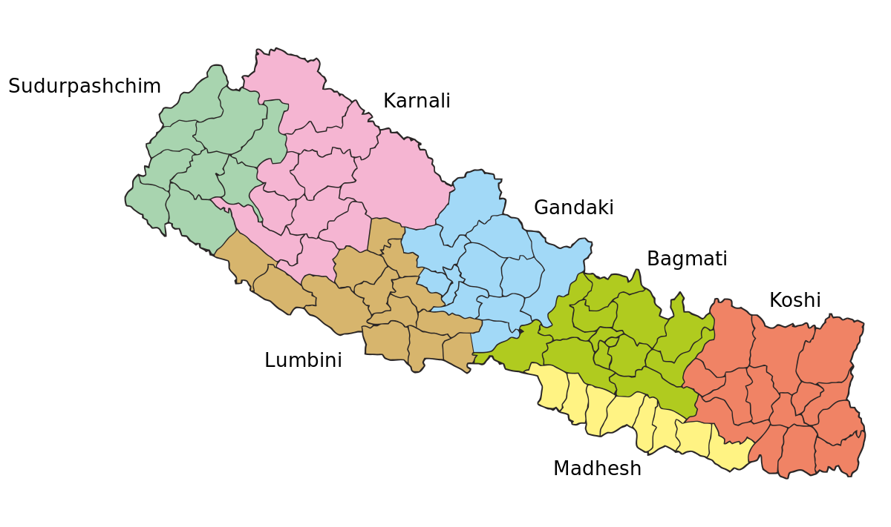

By Aakarshan Dahal
a coding begineer

PROVINCES OF NEPAL:
Nepal is divided into seven provinces, each with its own distinct geographical, cultural, and administrative characteristics. The provincial division was established as part of Nepal's transition to a federal democratic republic. Here is a detailed explanation of each province:
1. Province No. 1:
Capital: Biratnagar
Geography: Located in the eastern part of Nepal, Province No. 1 is diverse in its topography. It includes the flatlands of the Terai region, hills, and the easternmost part of the Himalayas.
Economy: The economy is based on agriculture, trade, and industries. It is known for tea production and hosts various industrial zones.
Cultural Significance: The region is rich in cultural diversity with various ethnic groups, including Rai, Limbu, and Sherpa.
2. Province No. 2:
Capital: Janakpur
Geography: Comprising the southern Terai region, Province No. 2 is characterized by fertile plains and a network of rivers. It is known for its agricultural productivity.
Economy: Agriculture, trade, and agro-based industries are significant contributors to the economy. The region is a major producer of rice and sugarcane.
Cultural Significance: Janakpur, a major city in the province, is a significant religious and cultural center with the Janaki Temple dedicated to Goddess Sita.
3. Bagmati Province:
Capital: Hetauda
Geography: Encompassing the central part of Nepal, Bagmati Province includes both hills and valleys. The capital city, Kathmandu, falls within this province.
Economy: The economy is diverse, with a strong focus on trade, services, and tourism. Kathmandu Valley is a major cultural and economic hub.
Cultural Significance: Bagmati Province is home to the historic and culturally rich Kathmandu Valley, with numerous temples, palaces, and UNESCO World Heritage Sites.
4. Gandaki Province:
Capital: Pokhara
Geography: Located in the central part of the country, Gandaki Province is known for its diverse landscapes, including the Annapurna mountain range, hills, and valleys.
Economy: The province relies on agriculture, tourism, and trade. Pokhara is a major tourist destination, offering stunning views of the Himalayas and serene lakes.
Cultural Significance: The region is culturally rich with a mix of ethnic communities, and it serves as a gateway to popular trekking and mountaineering destinations.
5. Lumbini Province:
Capital: Butwal
Geography: Situated in the western part of Nepal, Lumbini Province includes the Terai plains and hills. It is named after Lumbini, the birthplace of Lord Buddha.
economy: Agriculture, trade, and remittances play key roles in the economy. The region has potential for tourism, especially related to Buddhist pilgrimage.
Cultural Significance: Lumbini, a UNESCO World Heritage Site, attracts Buddhists from around the world. The province has a mix of cultural influences from various communities.
6. Karnali Province:
Capital: Birendranagar
Geography: Covering the mid-western part of Nepal, Karnali Province is characterized by rugged terrain, hills, and the western part of the Himalayas.
Economy: The economy relies on agriculture, livestock, and some mineral resources. The region faces challenges due to its remote location and difficult terrain.
Cultural Significance: Home to various ethnic groups, Karnali Province has a diverse cultural landscape.
7. Sudurpashchim Province:
Capital: Dipayal-Silgadhi
Geography: Located in the far-western part of Nepal, Sudurpashchim Province encompasses hills, mountains, and the western Terai region.
Economy: Agriculture and trade are essential components of the economy. The region is known for its diverse flora and fauna.
Cultural Significance: Sudurpashchim Province is home to various ethnic communities, each with its own cultural traditions and practices.
These provinces were established to decentralize governance, promote regional development, and empower local communities in the context of Nepal's transition to a federal democratic republic. Each province has its own Provincial Assembly, Chief Minister, and Council of Ministers responsible for local governance and development.